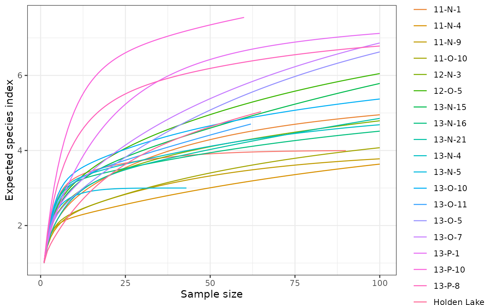
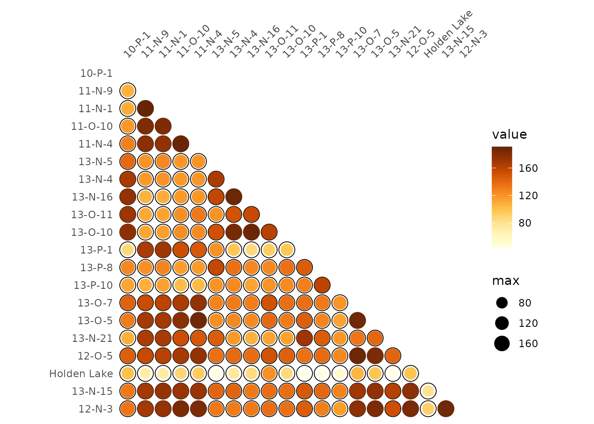
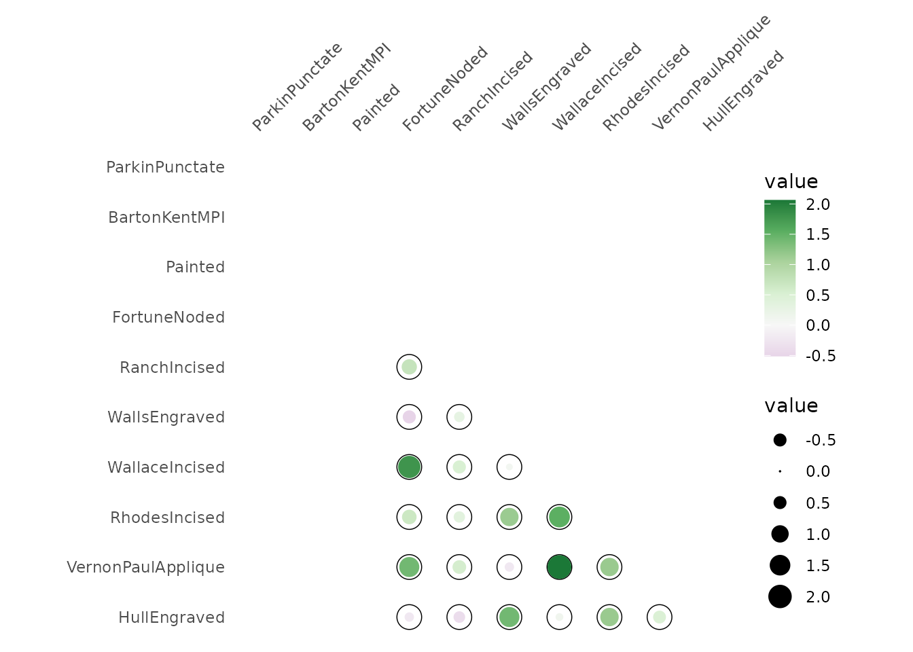

## Install extra packages (if needed)
# install.packages("folio") # Datasets
## Load packages
library(tabula)Thereafter, we denote by:
- \(S\) the total number of taxa recorded,
- \(i\) the rank of the taxon
- \(N_i\) the number of individuals in the \(i\)-th taxon,
- \(N = \sum N_i\) the total number of individuals,
- \(p_i\) the relative proportion of the \(i\)-th taxon in the population,
- \(s_k\) the number of taxa with \(k\) individuals,
- \(q_i\) the incidence of the \(i\)-th taxon.
Diversity in ecology describes complex interspecific interactions between and within communities under a variety of environmental conditions (Bobrowsky and Ball 1989). This concept covers different components, allowing different aspects of interspecific interactions to be measured.
To demonstrate how to use the diversity methods we will use a dataset containing ceramic counts from the Mississippi region, originally published by Lipo, Madsen, and Dunnell (2015).
## Data from Lipo et al. 2015
data("mississippi", package = "folio")\(\alpha\)-diversity
Heterogeneity and Evenness
Diversity measurement assumes that all individuals in a specific taxa are equivalent and that all types are equally different from each other (Peet 1974). A measure of diversity can be achieved by using indices built on the relative abundance of taxa. These indices (sometimes referred to as non-parametric indices) benefit from not making assumptions about the underlying distribution of taxa abundance: they only take relative abundances of the species that are present and species richness into account. Peet (1974) refers to them as indices of heterogeneity (\(H\)).
Diversity indices focus on one aspect of the taxa abundance and emphasize either richness (weighting towards uncommon taxa) or dominance [weighting towards abundant taxa; Magurran (1988)].
Evenness (\(E\)) is a measure of how evenly individuals are distributed across the sample.
Information theory index
Shannon-Wiener diversity index
The Shannon-Wiener index (Shannon 1948) assumes that individuals are randomly sampled from an infinite population and that all taxa are represented in the sample (it does not reflect the sample size). The main source of error arises from the failure to include all taxa in the sample: this error increases as the proportion of species discovered in the sample declines (Peet 1974; Magurran 1988). The maximum likelihood estimator (MLE) is used for the relative abundance, this is known to be negatively biased by sample size.
Heterogeneity for an infinite sample:
\[ H' = - \sum_{i = 1}^{S} p_i \ln p_i \]
Heterogeneity for a finite sample:
\[ H' = - \sum_{i = 1}^{S} \frac{n_i}{N} \ln \frac{n_i}{N} \]
heterogeneity(mississippi, method = "shannon")
#> [1] 1.2027955 0.7646565 0.9293974 0.8228576 0.7901428 0.9998430 1.2051989
#> [8] 1.1776226 1.1533432 1.2884172 1.1725355 1.5296294 1.7952443 1.1627477
#> [15] 1.0718463 0.9205717 1.1751002 0.7307620 1.1270126 1.0270291Evenness:
\[ E = \frac{H}{H_{max}} = \frac{H'}{\ln S} = - \sum_{i = 1}^{S} p_i \log_S p_i \]
evenness(mississippi, method = "shannon")
#> [1] 0.8676335 0.5515831 0.5187066 0.5112702 0.4909433 0.9100964 0.7488322
#> [8] 0.7316981 0.6436931 0.7190793 0.5638704 0.7860740 0.8633300 0.5049749
#> [15] 0.4654969 0.4427014 0.5651037 0.3514222 0.4894554 0.4938966When \(p_i\) is unknown in the population, an estimate is given by \(\hat{p}_i =\frac{n_i}{N}\) (maximum likelihood estimator - MLE). As the use of \(\hat{p}_i\) results in a biased estimate, Hutcheson (1970) and Bowman et al. (1971) suggest the use of:
\[ \hat{H}' = - \sum_{i = 1}^{S} \hat{p}_i \ln \hat{p}_i - \frac{S - 1}{N} + \frac{1 - \sum_{i = 1}^{S} \hat{p}_i^{-1}}{12N^2} + \frac{\sum_{i = 1}^{S} (\hat{p}_i^{-1} - \hat{p}_i^{-2})}{12N^3} + \cdots \]
This error is rarely significant (Peet 1974), so the unbiased form is not implemented here (for now).
Brillouin diversity index
The Brillouin index (Brillouin 1956) describes a known collection: it does not assume random sampling in an infinite population. Pielou (1975) and Laxton (1978) argues for the use of the Brillouin index in all circumstances, especially in preference to the Shannon index.
Diversity:
\[ H' = \frac{\ln (N!) - \sum_{i = 1}^{S} \ln (n_i!)}{N} \]
Evenness:
\[ E = \frac{H'}{H'_{max}} \]
with:
\[ H'_{max} = \frac{1}{N} \ln \frac{N!}{\left( \lfloor \frac{N}{S} \rfloor! \right)^{S - r} \left[ \left( \lfloor \frac{N}{S} \rfloor + 1 \right)! \right]^{r}} \]
where: \(r = N - S \lfloor \frac{N}{S} \rfloor\).
Dominance index
The following methods return a dominance index, not the reciprocal or inverse form usually adopted, so that an increase in the value of the index accompanies a decrease in diversity.
Simpson index
The Simpson index (Simpson 1949) expresses the probability that two individuals randomly picked from a finite sample belong to two different types. It can be interpreted as the weighted mean of the proportional abundances. This metric is a true probability value, it ranges from \(0\) (perfectly uneven) to \(1\) (perfectly even).
Dominance for an infinite sample:
\[ D = \sum_{i = 1}^{S} p_i^2 \]
Dominance for a finite sample:
\[ D = \sum_{i = 1}^{S} \frac{n_i \left( n_i - 1 \right)}{N \left( N - 1 \right)} \]
McIntosh index
The McIntosh index (McIntosh 1967) expresses the heterogeneity of a sample in geometric terms. It describes the sample as a point of a \(S\)-dimensional hypervolume and uses the Euclidean distance of this point from the origin.
Dominance:
\[ D = \frac{N - U}{N - \sqrt{N}} \]
Evenness:
\[ E = \frac{N - U}{N - \frac{N}{\sqrt{S}}} \]
where \(U\) is the distance of the sample from the origin in an \(S\) dimensional hypervolume:
\[U = \sqrt{\sum_{i = 1}^{S} n_i^2}\]
Berger-Parker index
The Berger-Parker index (Berger and Parker 1970) expresses the proportional importance of the most abundant type. This metric is highly biased by sample size and richness, moreover it does not make use of all the information available from sample.
Dominance:
\[ D = \frac{n_{max}}{N} \]
Richness and Rarefaction
The number of different taxa, provides an instantly comprehensible expression of diversity. While the number of taxa within a sample is easy to ascertain, as a term, it makes little sense: some taxa may not have been seen, or there may not be a fixed number of taxa [e.g. in an open system; Peet (1974)]. As an alternative, richness (\(R\)) can be used for the concept of taxa number (McIntosh 1967). Richness refers to the variety of taxa/species/types present in an assemblage or community (Bobrowsky and Ball 1989) as “the number of species present in a collection containing a specified number of individuals” (Hurlbert 1971).
richness(mississippi, method = "margalef")
#> [1] 0.5963696 0.4524421 0.6971143 0.6193544 0.5599404 0.4577237 0.7292886
#> [8] 0.7779583 1.0304965 0.9224182 1.1892416 1.1412278 1.5518107 1.2645413
#> [15] 1.2090820 1.0903435 1.1570758 1.1892416 1.2552092 1.0158754
composition(mississippi, method = "chao1")
#> [1] 4.000000 4.000000 6.000000 5.000000 5.000000 3.000000 5.000000
#> [8] 5.000000 7.984375 6.000000 8.000000 7.000000 8.494505 10.000000
#> [15] 10.000000 8.998371 8.498821 8.249306 10.000000 8.499491It is not always possible to ensure that all sample sizes are equal and the number of different taxa increases with sample size and sampling effort (Magurran 1988). Then, rarefaction (\(\hat{S}\)) is the number of taxa expected if all samples were of a standard size \(n\) (i.e. taxa per fixed number of individuals). Rarefaction assumes that imbalances between taxa are due to sampling and not to differences in actual abundances.
## Baxter rarefaction
RA <- rarefaction(mississippi, sample = 100, method = "baxter")
plot(RA)
| Measure | Reference |
|---|---|
| \[ R_{1} = \frac{S - 1}{\ln N} \] | Margalef (1958) * |
| \[ R_{2} = \frac{S}{\log N} \] | Odum, Cantlon, and Kornicker (1960) |
| \[ R_{3} = \frac{S}{\sqrt{N}} \] | Menhinick (1964) * |
| \[ R_{4} = \frac{S}{\log A} \] | Gleason (1922) |
| Measure | Reference |
|---|---|
| \[ \hat{S}_{1} = \alpha - \left[ \ln \left( 1 - x \right) \right] \] | Fisher, Corbet, and Williams (1943) |
| \[ \hat{S}_{2} = y_{0} \hat{\sigma} \sqrt{2 \pi} \] | Preston (1948) |
| \[ \hat{S}_{3} = 2.07 \left( \frac{N}{m} \right)^{0.262} \] | Preston (1962a), Preston (1962b) |
| \[ \hat{S}_{4} = 2.07 \left( \frac{N}{m} \right)^{0.262} A^{0.262} \] | Macarthur (1965) |
| \[ \hat{S}_{5} = k A^{d} \] | Kilburn (1966) |
| \[ \hat{S}_{6} = \frac{a N}{1 + b N} \] | de Caprariis, Lindemann, and Collins (1976) |
| \[ \hat{S}_{7} = \sum_{i = 1}^{S} 1 - \frac{{N - N_i} \choose n}{N \choose n} \] | Hurlbert (1971), Sander (1968) * |
Where:
- \(S\) is the number of observed species/types,
- \(N_i\) is the number of individuals in the \(i\)-th species/type,
- \(N = \sum_{i = 1}^{S} N_i\) is the total number of individuals,
- \(A\) is the area of the isolate or collection.
- \(m\) is the number of individuals in the rarest species/type.
- \(\alpha\) is the Fisher’s slope constant,
- \(y_{0}\) is the number of species/types in the modal class interval,
- \(\hat{\sigma}\) is the estimate of the standard deviation,
- \(n\) is the sub-sample size,
- \(R\) is the constant of rate increment,
- \(\hat{S}\) is the number of expected or predicted species/types,
- \(k\), \(d\), \(a\) and \(b\) are empirically derived coefficients of regression.
Asymptotic Species Richness
Chao1 estimator (Chao 1984)
\[ \hat{S}_{Chao1} = \begin{cases} S + \frac{N - 1}{N} \frac{s_1^2}{2 s_2} & s_2 > 0 \\ S + \frac{N - 1}{N} \frac{s_1 (s_1 - 1)}{2} & s_2 = 0 \end{cases} \]
In the special case of homogeneous case, a bias-corrected estimator is:
\[ \hat{S}_{bcChao1} = S + \frac{N - 1}{N} \frac{s_1 (s_1 - 1)}{2 s_2 + 1}\]
The improved Chao1 estimator makes use of the additional information of tripletons and quadrupletons (Chiu et al. 2014):
\[ \hat{S}_{iChao1} = \hat{S}_{Chao1} + \frac{N - 3}{4 N} \frac{s_3}{s_4} \times \max\left(s_1 - \frac{N - 3}{N - 1} \frac{s_2 s_3}{2 s_4} , 0\right)\]
Abundance-based Coverage Estimator (Chao and Lee 1992)
\[ \hat{S}_{ACE} = \hat{S}_{abun} + \frac{\hat{S}_{rare}}{\hat{C}_{rare}} + \frac{s_1}{\hat{C}_{rare}} \times \hat{\gamma}^2_{rare} \]
Where \(\hat{S}_{rare} = \sum_{i = 1}^{k} s_i\) is the number of rare taxa, \(\hat{S}_{abun} = \sum_{i > k}^{N} s_i\) is the number of abundant taxa (for a given cut-off value \(k\)), \(\hat{C}_{rare} = 1 - \frac{s_1}{N_{rare}}\) is the Turing’s coverage estimate and:
\[ \hat{\gamma}^2_{rare} = \max\left[\frac{\hat{S}_{rare}}{\hat{C}_{rare}} \frac{\sum_{i = 1}^{k} i(i - 1)s_i}{\left(\sum_{i = 1}^{k} is_i\right)\left(\sum_{i = 1}^{k} is_i - 1\right)} - 1, 0\right] \]
Chao2 estimator (Chao 1987)
For replicated incidence data (i.e. a \(m \times p\) logical matrix), the Chao2 estimator is:
\[ \hat{S}_{Chao2} = \begin{cases} S + \frac{m - 1}{m} \frac{q_1^2}{2 q_2} & q_2 > 0 \\ S + \frac{m - 1}{m} \frac{q_1 (q_1 - 1)}{2} & q_2 = 0 \end{cases} \]
Improved Chao2 estimator (Chiu et al. 2014):
\[ \hat{S}_{iChao2} = \hat{S}_{Chao2} + \frac{m - 3}{4 m} \frac{q_3}{q_4} \times \max\left(q_1 - \frac{m - 3}{m - 1} \frac{q_2 q_3}{2 q_4} , 0\right)\]
Incidence-based Coverage Estimator (Chao and Chiu 2016)
\[ \hat{S}_{ICE} = \hat{S}_{freq} + \frac{\hat{S}_{infreq}}{\hat{C}_{infreq}} + \frac{q_1}{\hat{C}_{infreq}} \times \hat{\gamma}^2_{infreq} \]
Where \(\hat{S}_{infreq} = \sum_{i = 1}^{k} q_i\) is the number of infrequent taxa, \(\hat{S}_{freq} = \sum_{i > k}^{N} q_i\) is the number of frequent taxa (for a given cut-off value \(k\)), \(\hat{C}_{infreq} = 1 - \frac{Q_1}{\sum_{i = 1}^{k} iq_i}\) is the Turing’s coverage estimate and:
\[ \hat{\gamma}^2_{infreq} = \max\left[\frac{\hat{S}_{infreq}}{\hat{C}_{infreq}} \frac{m_{infreq}}{m_{infreq} - 1} \frac{\sum_{i = 1}^{k} i(i - 1)q_i}{\left(\sum_{i = 1}^{k} iq_i\right)\left(\sum_{i = 1}^{k} iq_i - 1\right)} - 1, 0\right] \]
Where \(m_{infreq}\) is the number of sampling units that include at least one infrequent species.
\(\beta\)-diversity
Turnover
The following methods can be used to ascertain the degree of turnover in taxa composition along a gradient on qualitative (presence/absence) data. This assumes that the order of the matrix rows (from 1 to \(m\)) follows the progression along the gradient/transect.
We denote the \(m \times p\) incidence matrix by \(X = \left[ x_{ij} \right] ~\forall i \in \left[ 1,m \right], j \in \left[ 1,p \right]\) and the \(p \times p\) corresponding co-occurrence matrix by \(Y = \left[ y_{ij} \right] ~\forall i,j \in \left[ 1,p \right]\), with row and column sums:
\[\begin{align} x_{i \cdot} = \sum_{j = 1}^{p} x_{ij} && x_{\cdot j} = \sum_{i = 1}^{m} x_{ij} && x_{\cdot \cdot} = \sum_{j = 1}^{p} \sum_{i = 1}^{m} x_{ij} && \forall x_{ij} \in \lbrace 0,1 \rbrace \\ y_{i \cdot} = \sum_{j \geqslant i}^{p} y_{ij} && y_{\cdot j} = \sum_{i \leqslant j}^{p} y_{ij} && y_{\cdot \cdot} = \sum_{i = 1}^{p} \sum_{j \geqslant i}^{p} y_{ij} && \forall y_{ij} \in \lbrace 0,1 \rbrace \end{align}\]
| Measure | Reference |
|---|---|
| \[ \beta_W = \frac{S}{\alpha} - 1 \] | Whittaker (1960) * |
| \[ \beta_C = \frac{g(H) + l(H)}{2} - 1 \] | Cody (1975) * |
| \[ \beta_R = \frac{S^2}{2 y_{\cdot \cdot} + S} - 1 \] | Routledge (1977) * |
| \[ \beta_I = \log x_{\cdot \cdot} - \frac{\sum_{j = 1}^{p} x_{\cdot j} \log x_{\cdot j}}{x_{\cdot \cdot}} - \frac{\sum_{i = 1}^{m} x_{i \cdot} \log x_{i \cdot}}{x_{\cdot \cdot}} \] | Routledge (1977) * |
| \[ \beta_E = \exp(\beta_I) - 1 \] | Routledge (1977) * |
| \[ \beta_T = \frac{g(H) + l(H)}{2\alpha} \] | Wilson and Shmida (1984) * |
Where:
- \(\alpha\) is the mean sample diversity: \(\alpha = \frac{x_{\cdot \cdot}}{m}\),
- \(g(H)\) is the number of taxa gained along the transect,
- \(l(H)\) is the number of taxa lost along the transect.
Similarity
Similarity between two samples \(a\) and \(b\) or between two types \(x\) and \(y\) can be measured as follow.
These indices provide a scale of similarity from \(0\)-\(1\) where \(1\) is perfect similarity and \(0\) is no similarity, with the exception of the Brainerd-Robinson index which is scaled between \(0\) and \(200\).
| Measure | Reference |
|---|---|
| \[ C_J = \frac{o_j}{S_a + S_b - o_j} \] | Jaccard * |
| \[ C_S = \frac{2 \times o_j}{S_a + S_b} \] | Sorenson * |
| Measure | Reference |
|---|---|
| \[ C_{BR} = 200 - \sum_{j = 1}^{S} \left| \frac{a_j \times 100}{\sum_{j = 1}^{S} a_j} - \frac{b_j \times 100}{\sum_{j = 1}^{S} b_j} \right|\] | (brainerd1951?), (robinson1951?) * |
| \[ C_N = \frac{2 \sum_{j = 1}^{S} \min(a_j, b_j)}{N_a + N_b} \] | Bray and Curtis (1957), Sorenson * |
| \[ C_{MH} = \frac{2 \sum_{j = 1}^{S} a_j \times b_j}{(\frac{\sum_{j = 1}^{S} a_j^2}{N_a^2} + \frac{\sum_{j = 1}^{S} b_j^2}{N_b^2}) \times N_a \times N_b} \] | Morisita-Horn * |
| Measure | Reference |
|---|---|
| \[ C_{Bi} = \frac{o_i - N \times p}{\sqrt{N \times p \times (1 - p)}} \] | (kintigh2006?) * |
Where:
- \(S_a\) and \(S_b\) denote the total number of taxa observed in samples \(a\) and \(b\), respectively,
- \(N_a\) and \(N_b\) denote the total number of individuals in samples \(a\) and \(b\), respectively,
- \(a_j\) and \(b_j\) denote the number of individuals in the \(j\)-th type/taxon, \(j \in \left[ 1,S \right]\),
- \(x_i\) and \(y_i\) denote the number of individuals in the \(i\)-th sample/case, \(i \in \left[ 1,m \right]\),
- \(o_i\) denotes the number of sample/case common to both type/taxon: \(o_i = \sum_{k = 1}^{m} x_k \cap y_k\),
- \(o_j\) denotes the number of type/taxon common to both sample/case: \(o_j = \sum_{k = 1}^{S} a_k \cap b_k\).
## Brainerd-Robinson (similarity between assemblages)
BR <- similarity(mississippi, method = "brainerd")
plot_spot(BR, col = khroma::colour("YlOrBr")(12))
## Binomial co-occurrence (similarity between types)
BI <- similarity(mississippi, method = "binomial")
plot_spot(BI, col = khroma::colour("PRGn")(12))